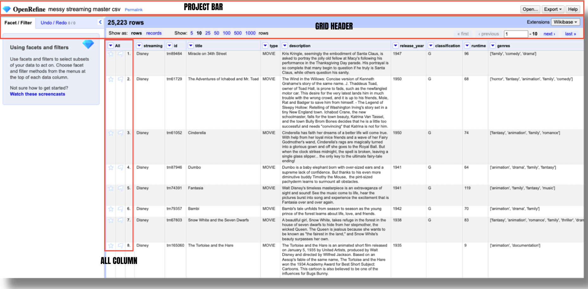
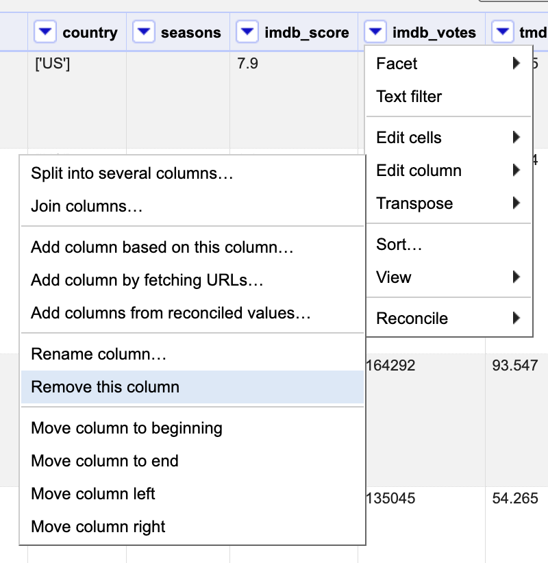
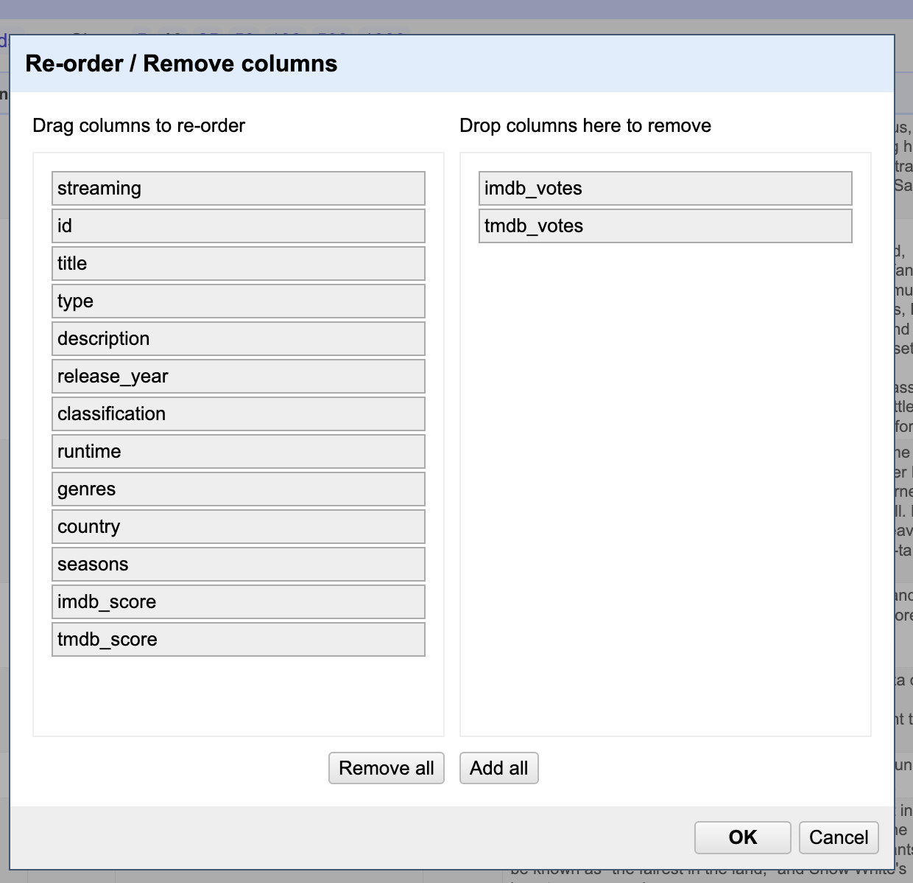

Navigating the Basics in OpenRefine
Before diving into data cleaning and transformation tasks, it’s important to do a walk-through of OpenRefine’s interface to get familiar with how to navigate and use its features effectively.
Interface Walk-Through
Understanding the layout, menus, and tools available will help streamline your workflow and make it easier to locate the functions you need.

Project Bar
The project bar is located at the very top of the screen. It includes the OpenRefine logo, the project title, and a permalink next to it in the left side. This permalink is a special URL that captures the current state of your project’s facets and filters. It lets you save or share exactly what you’re looking at—so if you’ve filtered your data in a certain way or set up specific facets, you can generate a permalink to return to that exact view later or share it with someone else.
To create a permalink, click on it and OpenRefine will reload the project with a new URL in the address bar. That URL includes all your current facets, filters, and their specific settings (like sorting order). You can then copy that URL and save or share it with collaborators. Essentially, permalinks are especially useful for collaboration, documentation, or revisiting a specific view of your data. When shared, they allow others to see the exact same project state you were working with—including filtered rows, selected facets, and how the data was sorted. This makes it easier to troubleshoot issues, review changes, or discuss findings with teammates without needing to replicate the setup manually.
It is important to note, however that the permalink does not save your data or transformations—it only saves how you’re currently viewing the data. All transformations are still stored separately in the project’s History.
You can return to the home screen at any time by clicking the OpenRefine logo. To open another project in a new tab or window, right-click the logo and select “Open in a new tab.” Keep in mind that closing your current project will reset your facets and view settings, though all data transformations will remain saved in the project’s History.
Don’t use your browser’s “back” button — it may close your project and erase your facets and view settings.
Grid Header
The grid header appears just below the project bar and above the project grid, where your project’s data is displayed. It shows the total number of rows or records in your project—in this case, 25,223—and indicates whether you’re currently viewing the data in rows or records mode. If you’re viewing a filtered or faceted subset of the data - let’s say we select only the records corresponding to shows, the grid header will reflect that, showing something like “5,774 matching rows(25,223 total)” to let you know you’re seeing a subset of the dataset.
Toggling between row mode and records mode won’t affect our example dataset, since each row represents a distinct watch event. However, imagine a scenario where your data includes TV shows with multiple seasons, and each season has detailed information about specific scores, episode names, or even viewer ratings. In this case, switching to records mode would allow you to group all data for a single TV show (including all its seasons) under one record, making it easier to analyze the show as a whole, rather than treating each season or episode as a separate event.
To the right of the rows/records toggle, you’ll find controls to adjust how many rows or records are visible on screen at once.
On the far right, navigation buttons let you move through your dataset one page at a time.
All Column
The first column in every project is always labeled ‘All’ which refers to the complete set of data fields (columns) in your dataset. These columns represent the structure of your data, and working with it allow you to perform operations that apply to all collumns. It also displays the numbering of rows or records, which reflects their permanent order. While temporary sorts or filters (facets) may rearrange or limit the visible rows, the numbering continues to show the original identifiers, unless a permanent change is made to the dataset.
Besides the sequential numbering, this column also has stars and flags. Both of these icons have neutral meaning, and let you mark specific rows based on your own criteria, for later focus. Unlike permalinks, they persist even after closing and reopening your project. You can use them however you like, though they’re typically used to flag errors or highlight important rows you would like to edit.
To manually star or flag a row, just click the star or flag icon in the All column. You can also use All → Edit rows → Star/Flag rows to tag larger groups at once—helpful when working with patterns that need multi-step fixes that break filters. Instead of re-filtering as the data changes, flag the rows first, then use Facet by flag to keep track.
Using both stars and flags can help you track two different sets of criteria within your dataset. For example, in our dataset you might consider using stars to highlight titles that are trending or have a high rating (your first filter). Then, after clearing the stars, you could use flags to mark rows—like rows 8 and 10—that are missing an age classification and need to be reviewed or completed later.
Titles that meet both criteria (e.g. popular but missing age ratings) will now be both starred and flagged, making them easy to locate using the facet filters. While this approach works, especially in smaller datasets, we’ll explore more efficient methods for managing and updating large streaming libraries later on.
Reording, Renaming & Deleting Columns
OpenRefine is primarily designed for data cleaning rather than adding new columns or rows. However, it does provide essential tools for reorganizing your dataset, including renaming, reordering, and deleting columns.
For example, we want to remove the imdb_votes and tmdb_votes columns. This can be done in one of two ways: by deleting each column individually or by using the “All” column dropdown to manage multiple columns at once. Choose the method that works best for you to exclude them:

